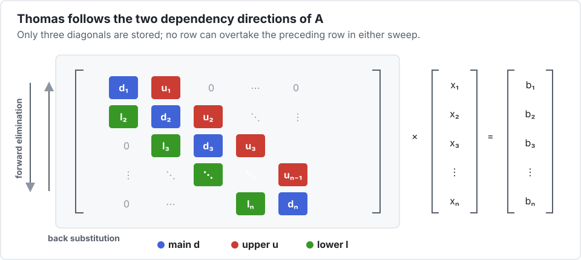

Tutorial 1 — Vectorizing a tridiagonal solve
This tutorial starts with an algorithm a compiler cannot normally vectorize: the Thomas solver for a tridiagonal linear system. By the end, the same Julia function will solve one system with scalar arithmetic or several systems with SIMD arithmetic.
1. Find the dependency
For a tridiagonal system $Ax=b$, forward elimination computes each value from the one just before it. The backward pass has the same problem in reverse. Reordering either loop changes the algorithm.

using Interleave
function thomas!(x, d, u, l, b, scratch)
@inbounds begin
pivot = d[1]
invpivot = inv(pivot)
x[1] = b[1] * invpivot
for i in 2:length(x)
scratch[i] = u[i - 1] * invpivot
pivot = d[i] - l[i] * scratch[i]
x[i] = b[i] - l[i] * x[i - 1]
invpivot = inv(pivot)
x[i] *= invpivot
end
for i in length(x)-1:-1:1
x[i] -= scratch[i + 1] * x[i + 1]
end
end
x
endthomas! (generic function with 1 method)This is deliberately ordinary scalar-looking Julia. There are no intrinsics, lane loops, generated functions, or vector-specific branches. It is also non-divergent: every lane uses the same loop bounds and follows the same control flow. Values differ between systems, but no packed value decides whether only some lanes enter a branch.
@inbounds is not needed to express the algorithm. It is a promise made by the kernel author after proving the indices valid; that promise is lexical, so apply! cannot safely add it around an arbitrary callback. On the measured Thomas workload, leaving the checks enabled still emitted SIMD but cost about 30%. A useful workflow is therefore to develop and test without @inbounds, then add it to the proven loop nest.
2. Build a scalar oracle
Put the batch in the first dimension. instance(A, b) is then the bth independent system.
function tridiagonal_batch(Arr, nbatch, n)
x = Arr([0.0f0 for _ in 1:nbatch, _ in 1:n])
d = Arr([2.0f0 for _ in 1:nbatch, _ in 1:n])
u = Arr([-1.0f0 for _ in 1:nbatch, _ in 1:n])
l = Arr([-1.0f0 for _ in 1:nbatch, _ in 1:n])
b = Arr([sinpi(Float32(job) / 8) + Float32(i) / n
for job in 1:nbatch, i in 1:n])
x, d, u, l, b
end
xs, ds, us, ls, bs = tridiagonal_batch(Base.Array{Float32,2}, 61, 32)
apply!(thomas!, xs, ds, us, ls, bs; scratch=scratchlike(xs))
xs[1, 1:4]4-element Vector{Float32}:
11.7895975
23.165262
34.09574
44.549786apply! calls the kernel once per scalar instance. This path is valuable even if you never use SIMD: it is the simplest oracle for tests and debugging.
The comprehension form works with both aliases. For a packed array it first creates a scalar matrix and then copies it into DLI storage. That is ideal for examples and setup code. Use undef followed by broadcast or a loop when peak memory or initialization time matters.
3. Switch the element type
Now choose packets of eight jobs. Sixty-one is intentionally not divisible by eight; the last packet therefore exercises padding.
xv, dv, uv, lv, bv = tridiagonal_batch(Interleave.Array{Float32,2,8}, 61, 32)
apply!(thomas!, xv, dv, uv, lv, bv; scratch=scratchlike(xv))
(xs == xv, packsize(xv), npacks(xv), npadding(xv))(true, 8, 8, 3)The equality is exact, not approximate. Each lane performs the same floating-point operations, in the same order, as its scalar instance.
Do not use @fastmath in a kernel that must match the scalar oracle. If fused multiply-add is part of the intended algorithm, write muladd explicitly in both paths.
4. See why it vectorizes
packet(xv, 1) is a dense vector whose element type is Vec{8,Float32}:
packed = packet(xv, 1)
(size(packed), strides(packed), eltype(packed))((32,), (1,), Vec{8, Float32})At index i, x[i] therefore represents index i from eight systems. The recurrence continues along i, but each arithmetic operation advances eight unrelated systems.

The final partial packet contains initialized padding lanes. They are allowed to compute, but the logical array hides them from indexing, comparison, and reduction.
5. Corroborate performance structurally
A shorter runtime is not proof of SIMD: cache effects and instruction-level parallelism can also help. code_llvm asks Julia to show the typed LLVM intermediate representation produced for one concrete method signature. It does not run the solver and it is not code that belongs inside the application. Here is a compact Boolean check instead of a screenful of IR:
using InteractiveUtils
function uses_vector_ir(f, argtypes, P)
io = IOBuffer()
code_llvm(io, f, argtypes; debuginfo=:none)
occursin("<$P x float>", String(take!(io)))
end
uses_vector_ir(thomas!, NTuple{6,Vector{Vec{8,Float32}}}, 8) # trueThe six argument types are x, d, u, l, b, and scratch. The marker <8 x float> means that the IR contains an eight-lane floating-point value. This is useful corroboration, not a permanent compiler guarantee: inspect native assembly as well when code generation is critical, and always pair structure with a runtime measurement.
Then benchmark behind a function barrier. On the measured Apple M-series workload, packet sizes larger than the 128-bit hardware vector continued to help because several vectors in flight hide the latency of the dependency chain.

On this run, P=32 reached 19.38× while P=16 reached 13.60×, even though one NEON register holds only four Float32 values. P=32 gives LLVM eight native vectors to schedule across the dependency latency. Going wider is not free: a separate P=64 inspection showed vector stack traffic, and the best threaded choice was P=16. The Thomas application study gives the complete sequential and threaded tables; Tutorial 4 develops a defensible tuning procedure.
6. Check the result with an inverse property
Comparing with an oracle tests the implementation. Checking $Ax-b$ also tests the problem being solved:
function tridiagonal_mul!(r, d, u, l, x)
n = length(x)
@inbounds begin
r[1] = d[1] * x[1] + u[1] * x[2]
for i in 2:n-1
r[i] = l[i] * x[i - 1] + d[i] * x[i] + u[i] * x[i + 1]
end
r[n] = l[n] * x[n - 1] + d[n] * x[n]
end
r
end
r = Interleave.Array{Float32,2,8}(undef, 61, 32)
fill!(r, 0)
apply!(tridiagonal_mul!, r, dv, uv, lv, xv)
maximum(abs(r[job, i] - bv[job, i]) for job in 1:61, i in 1:32) < 1f-4trueYou now have the core Interleave workflow: validate on Base.Array, change only the batch type, demand exact lane-wise agreement, inspect LLVM, and measure several packet sizes.